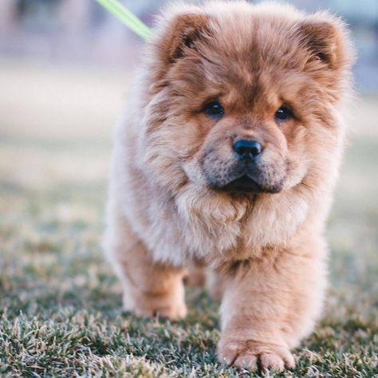

Моя собака Арета

Окрасы:
рыжий
чёрный
белый
Сторожевая собака, компаньон, одна из древнейших пород собак. По своему происхождению чау-чау относятся к группе шпицев, но существует предположение, что в них имеется примесь крови тибетского дога.